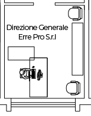

<map name="image_map">
  <area alt="" title="1" href="/Workstation" coords="52,121 82,121 82,188 52,187 52,157 36,157 37,139 52,139" shape="polygon" (click)="setWorkstationInSession('dir-erre-pro', 1)">
</map>
